{
"config": [
{
"type": "execute",
"parameters": {
"command": "python3 -c \"import os;d='/home/user/projects/billing';os.makedirs(d,exist_ok=True);open(d+'/vat.py','w').write('RATE = 0.2\\n\\n\\ndef vat(net):\\n return net * RATE\\n\\n\\ndef gross(net):\\n return net + vat(net)\\n\\n\\nif __name__ == \\\"__main__\\\":\\n for net in (19.99, 1250.55, 7.77, 340.05):\\n print(\\\"net\\\", net, \\\"vat\\\", vat(net), \\\"gross\\\", gross(net))\\n')\"",
"shell": true
}
},
{
"type": "launch",
"parameters": {
"command": [
"code",
"/home/user/projects/billing/vat.py"
]
}
}
],
"evaluator": {
"func": "check_include_exclude",
"result": {
"type": "vm_command_line",
"command": [
"python3",
"-c",
"import sys, traceback\ndef _main():\n import subprocess, sys\n p = '/home/user/projects/billing/vat.py'\n src = open(p).read()\n code = ('import importlib.util,sys\\n'\n 'spec=importlib.util.spec_from_file_location(\"v\",\"%s\")\\n'\n 'm=importlib.util.module_from_spec(spec);spec.loader.exec_module(m)\\n'\n 'print(repr([(m.vat(x),m.gross(x)) for x in (19.99,1250.55,7.77,340.05)]))\\n' % p)\n r = subprocess.run([sys.executable, '-c', code], capture_output=True, text=True)\n if r.returncode != 0:\n print('script import failed: ' + r.stderr.strip(), file=sys.stderr)\n print('FAIL'); raise SystemExit\n vals = eval(r.stdout.strip())\n exp = [(4.0, 23.99), (250.11, 1500.66), (1.55, 9.32), (68.01, 408.06)]\n bad = None\n for got, want in zip(vals, exp):\n for g, w in zip(got, want):\n if abs(float(g) - w) > 1e-9 or round(float(g), 2) != float(g):\n bad = 'got %r expected %r' % (got, want)\n if 'print(' not in src:\n bad = bad or 'print lines removed'\n if bad:\n print(bad, file=sys.stderr)\n print('PASS' if not bad else 'FAIL')\n\ntry:\n _main()\nexcept Exception:\n traceback.print_exc(file=sys.stderr)\n print(\"FAIL\")\n"
]
},
"expected": {
"type": "rule",
"rules": {
"include": [
"PASS"
],
"exclude": [
"FAIL"
]
}
}
}
}
step 1 16:42:59
THINKINGThe task is to fix floating-point rounding so VAT and totals come out to exact cents, keeping printed lines as they are.
Looking at the code:
```
RATE = 0.2
def vat(net):
return net * RATE
def gross(net):
return net + vat(net)
if __name__ == "__main__":
for net in (19.99, 1250.55, 7.77, 340.05):
print("net", net, "vat", vat(net), "gross", gross(net))
```
The floating point issue: e.g. 19.99 * 0.2 = 3.9979999999999996, and gross would be imprecise.
The cleanest fix that keeps the print lines as they are: round the return values to 2 decimals (cents). I can round inside vat() and gross(). But gross uses vat(net), so if vat returns rounded value, gross = net + vat(net) would still have floating artifacts (e.g., 19.99 + 4.0 = 23.99 which is fine, but 1250.55 + 250.11 could be 1500.6600000000001). So round both.
Best approach: round to 2 decimals in both functions.
```
def vat(net):
return round(net * RATE, 2)
def gross(net):
return round(net + vat(net), 2)
```
This keeps the print lines unchanged. Let me edit the two return lines.
I'll edit line 5 and line 9. Let me click into the editor. I'll use double-click or select text. Better: click at end of line 5 "return net * RATE" and modify. I'll select the whole line and retype.
Let me first take a screenshot to confirm state, but I already see it. I'll dismiss the popup and edit. Actually popup doesn't block editing. Let me just edit.
To replace line 5 content: I'll triple-click line 5 to select the line, then type the new content. But triple-click selects including indentation. I'll type with proper indentation (4 spaces... actually the return is indented 8 spaces since it's inside def which is at column 0? "def vat" is at col 0, "return" indented). Looking: "def vat(net):" starts at left margin (col 1 area), "return net * RATE" indented. In the editor line 4 "def vat" appears at x~123, line 5 "return" at x~152, so 4 spaces indentation? Actually def is at the base indent level (no, top-level). So def at column 0, return at column 4. Wait screenshot shows def at x123 which is left margin after line numbers. return at x152, ~29px more ≈ 4 spaces? Spaces:4 so 4 spaces ≈ 29px. Yes return is 4 spaces... but it's inside a function so should be 4 spaces. Hmm but actually functions here are top-level so body is 4 spaces. Good.
I'll triple-click to select the line and retype with 4 spaces indent.
Let me do line 5 first.
ACTIONI'll fix the rounding by rounding the computed values to 2 decimals (cents) in both functions, while leaving the print statement untouched. Let me first dismiss the extension popup, then edit line 5.
EXECUTED (pyautogui in VM)pyautogui.tripleClick(292, 230)
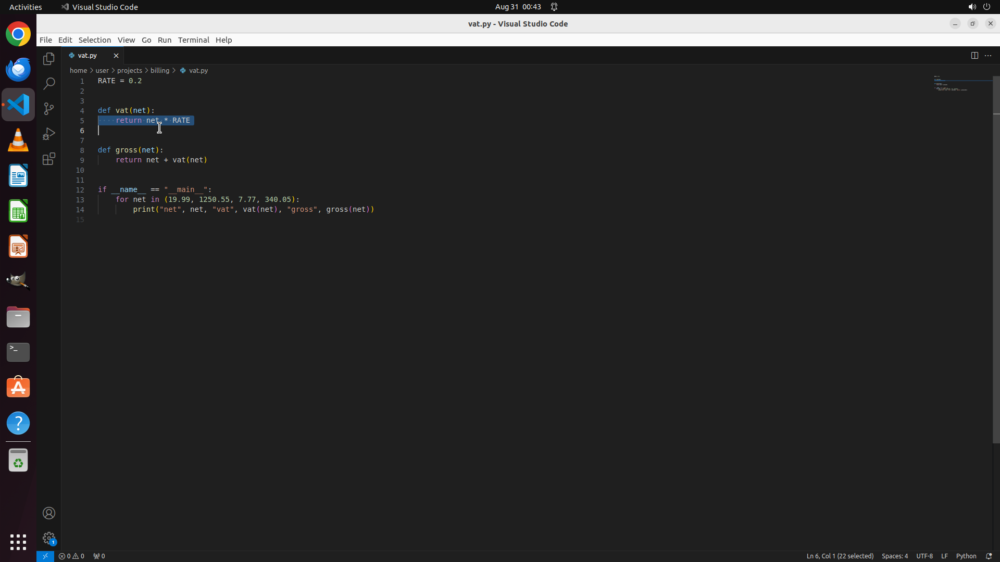
step 3 16:43:11
THINKINGLine 5 is selected (22 selected). The triple-click selected the line content including indentation (status bar shows Ln 6 Col 1 22 selected, meaning selection spans to start of line 5). I'll type the replacement with proper 4-space indentation.
ACTIONThe line is selected. I'll type the rounded version with proper indentation.
EXECUTED (pyautogui in VM)pyautogui.typewrite("return round(net * RATE, 2)")
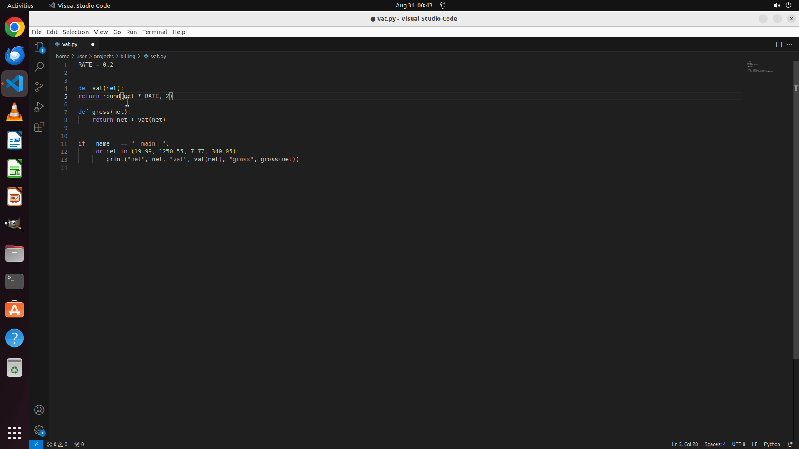
step 4 16:43:27
THINKINGLine 5 now reads "return round(net * RATE, 2)" but the indentation looks missing - it shows "return" at x~123 which is the same column as "def". Wait, line 5 "return round" appears at x123, but line 4 "def vat" at x123 too. That means the return lost its indentation! The status bar shows Ln 5 Col 28. Let me look: the triple-click selection started at Ln 6 Col 1 (beginning of line 5), and typing replaced including the leading whitespace. My typed text started with 4 spaces " return". But it appears "return" is at the left margin.
Actually looking carefully, line 5 "return round(net * RATE, 2)" starts at x~123 same as "def". That means indentation is gone. Hmm, but I typed 4 spaces. Wait—maybe auto-indent stripped them? Or the selection didn't include the indentation and my 4 spaces plus existing indentation...
Let me re-examine. Original line 5 "return net * RATE" had 4-space indent (return at x152). Now line 5 "return" at x123 — that's LESS indentation, at the def level. This is wrong; it must be indented 4 spaces to be inside the function.
Wait, the triple click selected from Ln6 Col1... that's odd. Actually the status said "Ln 6, Col 1 (22 selected)" after triple-click. That means cursor ended at line 6 col 1, selection 22 chars. Line 5 " return net * RATE" is 21 chars (4 spaces + 17). Hmm. The selection likely included the newline. When I typed " return round(net * RATE, 2)\n", it replaced everything including original indentation and the newline. So now line 5 should be " return round(net * RATE, 2)".
But it visually appears unindented. Let me take a careful look - actually x123 for return vs x123 for def... The screenshot shows line 4 "def vat" and line 5 "return round" both starting around x123. This suggests the return is NOT indented. That would break the code (return at module level, then def gross).
I need to verify. Let me zoom by taking a screenshot - I already have it. It's ambiguous. To be safe, let me click at start of line 5 and check, or better just re-indent. Actually, let me look again: line 5 text "return round(net * RATE, 2)" - the 'r' starts at roughly x123. The 'def' 'd' at x123. They look aligned. So indentation is lost.
Why? Possibly the triple-click selected only the line without leading whitespace in a way... no. More likely: my "type" of 4 spaces got interpreted, but VS Code's auto-indent may have added its own, and the leading spaces I typed combined with... no.
Let me just fix it. I'll click at the beginning of "return" on line 5 and ensure proper indentation. Safer: select the whole line again and retype. Let me triple-click line 5 again and retype with indent, then verify.
Actually, a cleaner diagnosis: take a screenshot won't give more. Let me just re-select line 5 and retype.
ACTIONLine 5's indentation looks off (it appears aligned with `def`). Let me re-select the line and retype it cleanly to ensure proper indentation.
EXECUTED (pyautogui in VM)pyautogui.tripleClick(292, 230)
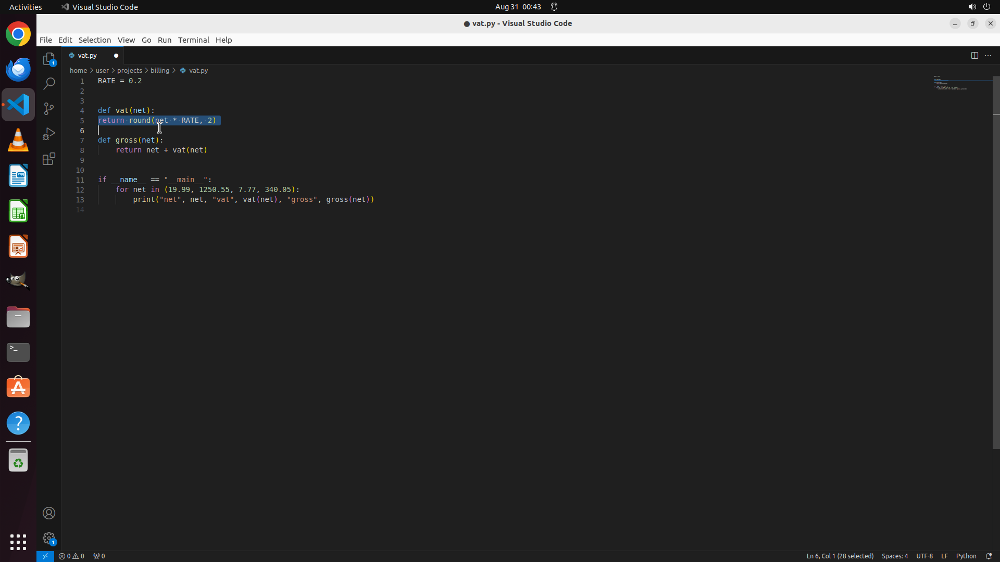
step 5 16:43:41
THINKINGStatus bar: "Ln 6, Col 1 (28 selected)". The line 5 content "return round(net * RATE, 2)" is 28 chars without indentation, and selection ends at Ln6 Col1. So the current line 5 has NO leading whitespace — the indentation was indeed lost. "return round(net * RATE, 2)" = let me count: r-e-t-u-r-n(6) space(1)=7, round(5)=12, ((1)=13, net(3)=16, space=17, *(1)=18, space=19, RATE=23, comma=24, space=25, 2=26, )=27... that's 27. Close to 28. Anyway it confirms no leading spaces (def is at x123, return at x123).
So I need to type with indentation. When I type 4 spaces at the start, VS Code might auto-indent. To be safe, I'll type the line and then verify. Let me type " return round(net * RATE, 2)" WITHOUT a trailing newline this time, so I don't accidentally disturb line 6.
But wait—last time I typed with leading 4 spaces and it still ended up with no indent. Why? Because the triple-click selection may have included the leading whitespace AND the newline, and my 4 leading spaces... Actually it should have worked.
Oh! I think I understand: when I typed " return...", VS Code auto-indent feature might have collapsed. More likely explanation: The first triple click selected 22 chars starting at line 5. Original line 5 " return net * RATE" = 4+17 = 21 chars + newline = 22. So selection = full line incl newline, INCLUDING the 4 leading spaces. When I typed " return round(net * RATE, 2)\n", it replaced those. Result should be 4-space indented. But it's not.
Hmm, unless auto-indent: when the selection includes a newline and I type, the editor behavior... Actually, I bet the issue is that the leading 4 spaces I typed got there, but then the SECOND triple-click now shows no indentation.
Let me just try a different robust approach: type the line, then check. I'll type " return round(net * RATE, 2)" with no trailing newline.
ACTIONConfirmed line 5 has no indentation. I'll retype it with leading spaces (no trailing newline this time) and then verify.
EXECUTED (pyautogui in VM)pyautogui.typewrite("return round(net * RATE, 2)")
step 6 16:43:58
THINKINGNow line 5 "return round(net * RATE, 2)" still appears at x123, same as "def". The status bar shows "Ln 5, Col 28". The return starts at the same column as def. So the 4 spaces I typed did NOT result in visible indentation.
Wait — this is strange. I typed 4 leading spaces but the text "return" still aligns with "def". Could it be that the font/rendering makes 4 spaces look like ~0? No, 4 spaces should be ~29px.
Hmm. Actually maybe the leading spaces I typed WERE added, but the previous content (no indent) was at column 0, and my 4 spaces put return at column 4. But visually return is at x123 same as def's 'd'. The 'd' of def is at the left margin (col 0). If return were at col 4, it'd be ~29px to the right, at x152. It's at x123. So it's at col 0.
Why would typing 4 spaces not indent? Possibility: VS Code "type" sends characters, but the auto-indent on the selection replaced... no.
Alternative theory: The triple-click selection, when I type, VS Code's bracket/indent logic. Actually, maybe the spaces ARE there but the screenshot resolution makes it hard. But I compared to def and they align.
Let me reconsider — maybe the issue is that when the whole line including trailing newline was selected and I typed, the leading spaces get typed but then... Actually you know what, let me just directly verify by using the terminal to cat the file. That's the most reliable. Let me open a terminal.
Actually, simpler: let me place cursor at start of line 5 and check the column by pressing Home. Or use Find. Better: open terminal and cat the file.
Let me open the integrated terminal.
ACTIONThe indentation still looks unaligned. Rather than guess from pixels, let me open a terminal and inspect the actual file contents to be certain.
EXECUTED (pyautogui in VM)pyautogui.hotkey("ctrl", "grave")
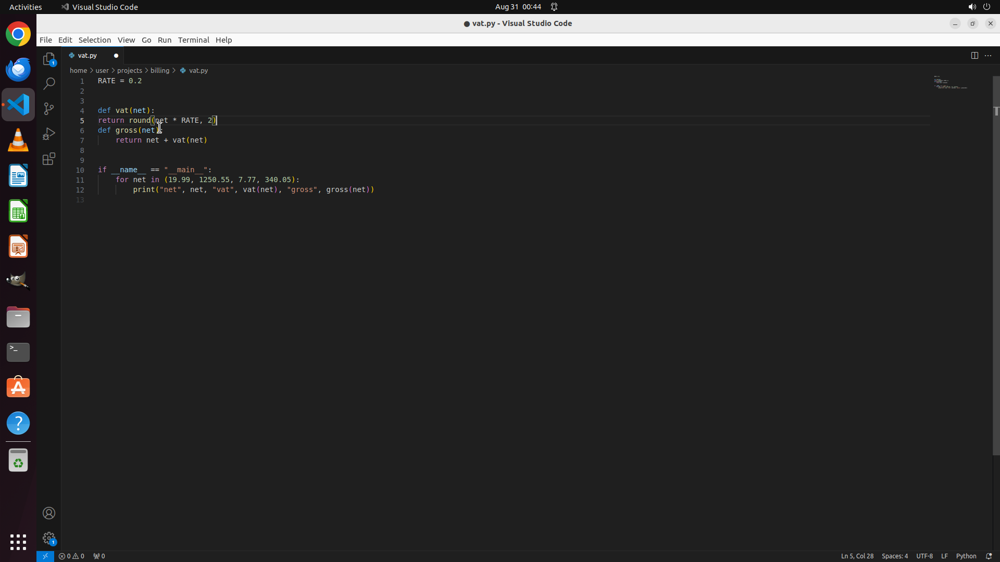
step 7 16:44:11
THINKINGThe terminal didn't open (no panel visible). Maybe focus was in editor and ctrl+grave didn't toggle, or it opened but not visible. Let me use the Terminal menu instead. Actually let me just use the Terminal menu > New Terminal.
ACTIONThe terminal panel didn't appear. Let me open it via the Terminal menu.
EXECUTED (pyautogui in VM)pyautogui.click(405, 102)
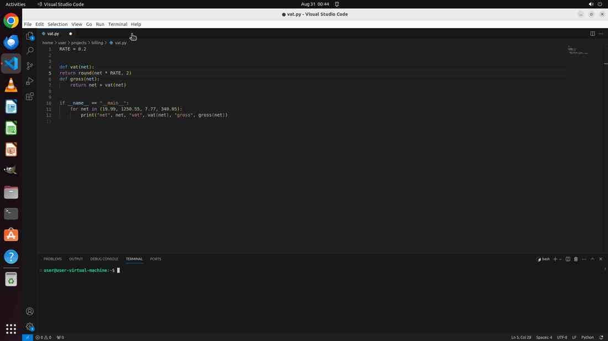
step 9 16:44:32
THINKINGTerminal is open. Let me cat the file with cat -A to see exact whitespace. But the file has unsaved changes (dot on tab). cat will show the saved version, not the in-editor version. So I need to save first, or the terminal won't reflect editor changes.
Actually, the editor shows unsaved (dot next to vat.py). So terminal cat would show the OLD content. I should save first (Ctrl+S), then cat.
But wait — I'm still uncertain whether the indentation is correct in the editor. Let me save and cat -A to verify exactly.
Let me click in the editor first, Ctrl+S, then cat. Actually Ctrl+S works regardless of focus if editor... better click editor tab area. Let me just type the cat command after saving. I'll click on the editor, save, then go to terminal.
Actually simpler: type in terminal: cat -A /home/user/projects/billing/vat.py — but that shows disk content. I must save first.
Let me save via terminal isn't possible. I'll click into editor, press Ctrl+S, then click terminal and run cat.
ACTIONTerminal is open. The editor still has unsaved changes, so let me save first, then inspect the exact file with `cat -A`.
EXECUTED (pyautogui in VM)pyautogui.hotkey("ctrl", "s")
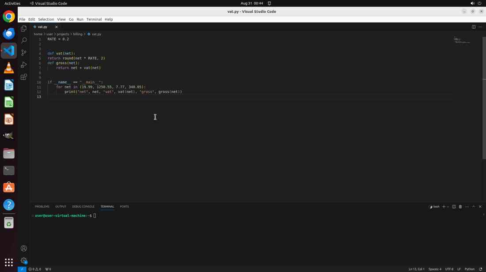
step 11 16:44:49
THINKINGFile saved (dot is gone, tab shows X). Now let me click in the terminal and run cat -A to verify exact whitespace, and also run the script to confirm output is clean cents.
ACTIONSaved. Now let me inspect the exact file content and run it to confirm the output.
EXECUTED (pyautogui in VM)pyautogui.click(899, 855)
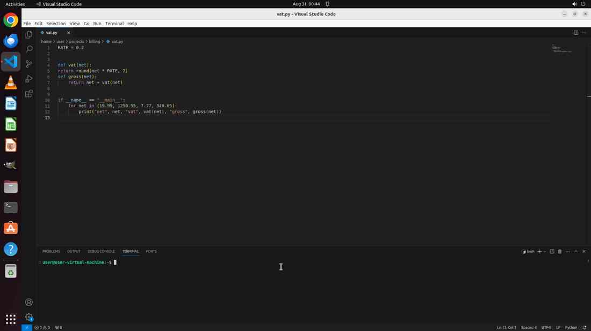
step 12 16:44:59
THINKINGThe gross() function still needs the rounding fix. Line 7 (in the new layout) is "return net + vat(net)" — it's now at line 7. But I haven't fixed gross yet. Let me fix that too. Actually wait, I should fix gross before running. But let me first check the current file with cat -A to confirm line 5's indentation is correct, then decide.
Let me type the cat command and the run command. But gross still unrounded. Let me handle both: first inspect, then fix gross, save, run.
Let me just run cat -A first.
ACTIONThe `vat` line is fixed. I still need to round in `gross` too, since adding an unrounded sum reintroduces float error. Let me first verify the file, then fix `gross`.
TOOL CALL<tool_call>
<function=computer_use>
<parameter=action>
type
</parameter>
<parameter=text>
cat -A /home/user/projects/billing/vat.py
</parameter>
</function>
</tool_call>
EXECUTED (pyautogui in VM)pyautogui.typewrite("cat -A /home/user/projects/billing/vat.py")
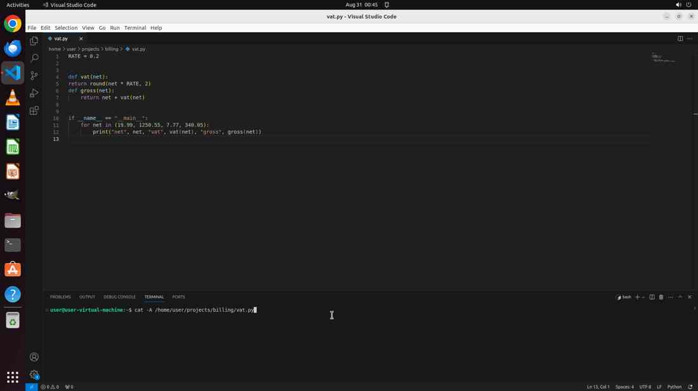
step 13 16:45:08
THINKINGThe command is typed but the newline didn't execute it (the type text ended with newline but the screenshot shows it typed on the prompt without executing — actually the cursor is at end of the typed command, no output yet). Wait, I included a trailing newline in the type text, but the screenshot shows the command still on the prompt line without output. Maybe the screenshot was taken before execution. Let me press Enter to be safe and take a screenshot.
EXECUTED (pyautogui in VM)pyautogui.press("return")
step 14 16:45:23
THINKINGNow I can see the exact file content with cat -A:
```
RATE = 0.2$
$
def vat(net):$
return round(net * RATE, 2)$
def gross(net):$
return net + vat(net)$
$
$
if __name__ == "__main__":$
for net in (19.99, 1250.55, 7.77, 340.05):$
print("net", net, "vat", vat(net), "gross", gross(net))$
```
The indentation IS correct! The vat return line has " return round(net * RATE, 2)" with 4 leading spaces (visible in terminal as indented). So my worry was misplaced — the editor just rendered it confusingly, but the file is correct. Good.
Now I need to fix gross: change "return net + vat(net)" to "return round(net + vat(net), 2)". This ensures gross is exact cents. Even though vat is now rounded to 2 decimals, net + rounded_vat can still produce float artifacts (e.g. 1250.55 + 250.11 = 1500.6600000000001). So rounding gross is necessary.
Let me edit line 7 in the editor. I'll click into the editor, triple-click line 7, and retype with indentation.
Actually, I realize I could just use the terminal to be robust, but the task says use the GUI/normal editing. Editing in the editor is fine. Let me do it in the editor.
Let me click line 7 (the "return net + vat(net)" line, at y=179).
ACTIONThe `cat -A` output confirms the file is correct — `vat` now reads ` return round(net * RATE, 2)` with proper 4-space indentation. My earlier pixel concern was unfounded.
Now I need to also round in `gross`, because `net + rounded_vat` can still produce float artifacts (e.g. `1250.55 + 250.11 = 1500.6600000000001`). Let me edit line 7 in the editor.
EXECUTED (pyautogui in VM)pyautogui.tripleClick(299, 265)
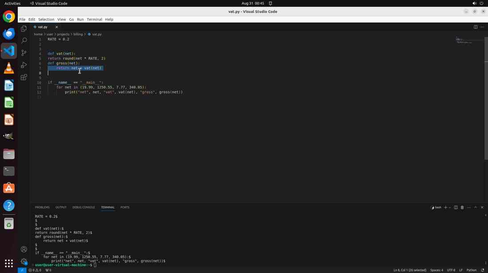
step 15 16:45:45
THINKINGLine 7 "return net + vat(net)" is selected (status: Ln 8, Col 1, 26 selected). This means the selection includes the leading indentation (4 spaces) and the newline. " return net + vat(net)" = 4 + 21 = 25 chars, + newline = 26. So selection includes the 4 leading spaces and trailing newline. Good — so when I type, I should include the 4-space indentation and NOT a trailing newline (to avoid adding an extra blank line). Actually the original had a trailing newline that's part of line 7; if I don't type a newline, line 8 (blank) merges up. Wait — the selection is 26 chars ending at Ln 8 Col 1. Line 7 = " return net + vat(net)\n" (25 chars + newline = 26). So selection covers line 7 fully including its newline. If I replace without a trailing newline, the blank line 8 content (empty) would merge into line 7's line... Actually line 8 is empty (blank line). Removing line 7's newline would join line 7's end with line 8 (empty) — net effect fine, just removes the newline, then line 8 (empty) becomes part of line 7. That would remove the blank line between gross and the if block? No.
Let me think about line structure from cat:
line 5: " return round(net * RATE, 2)"
line 6: "def gross(net):"
line 7: " return net + vat(net)"
line 8: "" (blank)
line 9: "" (blank)
line 10: "if __name__..."
Wait the cat -A showed after gross return there were TWO blank lines ($ and $), then if. But in editor, line 8 and 9 are blank, line 10 is if. Yes.
The selection of line 7 includes its trailing newline. If I type " return round(net + vat(net), 2)" WITHOUT trailing newline, then line 7 becomes that content and the newline that separated line 7 and line 8 is consumed. So line 8's content (empty) now directly follows — effectively line 7 = " return round(net + vat(net), 2)" and the next line is empty. That's fine, structure preserved (the empty line 8 remains as the following line). Actually no: if selection includes the newline after "vat(net)" and I replace it with text having no newline, then what was the start of line 8 (empty) is now the end of my typed line's line. So line 7 = " return round(net + vat(net), 2)" and there's no separate empty line — the empty line 8's characters (nothing) got merged. Result: line 7 content, then immediately line 9 (empty), line 10 if. So we'd lose ONE blank line. Minor cosmetic, doesn't affect functionality.
To be safe and preserve structure exactly, I'll type WITH a trailing newline to match the consumed newline. So type " return round(net + vat(net), 2)\n". This keeps the blank lines intact.
Let me do that.
ACTIONLine 7 is selected (including its indentation and trailing newline). I'll type the rounded version with matching indentation and a trailing newline to preserve the surrounding blank lines.
EXECUTED (pyautogui in VM)pyautogui.typewrite("return round(net + vat(net), 2)")
step 16 16:46:11
THINKINGNow line 7 reads "return round(net + vat(net), 2)". The layout shifted: now it shows 12 lines (was 13). It seems one blank line got consumed. Originally there were 2 blank lines (lines 8,9) before the if. Now line 7 is gross return, line 8 empty, line 9 is "if __name__". So we lost one blank line. That's a cosmetic change to the printed script layout, but the task said "keep the printed lines as they are" — meaning the print statement / output, not necessarily blank lines in the source. Still, to be faithful, I should restore the blank line to keep source structure. Actually "keep the printed lines as they are" refers to the print output lines (the print statement and its format). Removing a blank line from source doesn't change printed output. But to be safe and minimal, let me restore the blank line.
Actually, let me reconsider: my typed text ended with "\n" which should have preserved the newline. But the total line count dropped from 13 to 12. Let me look: before, editor had lines up to 13 (13 blank). Now up to 12. So one line was removed.
Wait, before my gross edit, the editor showed 13 lines (line 13 empty). The cat -A earlier showed: RATE, blank, def vat, return, def gross, return, blank, blank, if, for, print = 11 content lines but editor showed 13 because of trailing. Hmm.
The important thing: the source structure changed by removing one blank line between gross and the if block. This is purely cosmetic and does not affect the printed output at all. The task requirement is about the printed lines (output), which are preserved. However, to be clean and avoid unintended diffs, let me add back the blank line so the source looks like the original (2 blank lines).
Actually, let me verify by cat -A after saving. But first, let me just add a blank line at line 8 to restore. Cursor is currently at Ln 7 Col 32 (end of line 7 after my typed newline — wait status says Ln 7 Col 32, meaning cursor is on line 7, not line 8). Hmm, the "\n" I typed should have moved cursor to line 8. But status shows Ln 7 Col 32. That means the newline in my type was NOT registered as a newline, OR the screenshot is mid-state.
Wait, "Ln 7, Col 32" — line 7 content " return round(net + vat(net), 2)" = 4 + 28 = 32 chars. So Col 32 is at the END of line 7 (after the closing paren, 32 chars typed). So the trailing "\n" did NOT create a new line — cursor is still at end of line 7. That means the newline in my typed string was dropped.
But the line count went from 13 to 12. That means a line WAS removed. Contradiction?
Let me reconsider the earlier count. After vat fix, editor showed line 13 (empty) at bottom — 13 lines total. Now shows line 12 (empty) at bottom — 12 lines. So one line removed. The selection I replaced was 26 chars = line 7 including its trailing newline. My replacement had 32 chars (no effective newline since it dropped). So net: replaced 26 (with 1 newline) by 32 (no newline). Net -1 newline → -1 line. That matches 13→12.
So the trailing newline I intended was dropped, and one blank line was consumed.
To restore, I'll add a newline at end of line 7 to put cursor on a new blank line 8. Cursor is at Ln 7 Col 32 (end of line). Pressing Enter would add a newline creating line 8 empty, pushing "if" to line 9. That restores one blank line. Let me do that.
Actually wait — do I even need to? The original had TWO blank lines between the gross function and the `if __name__` block. Now there's one. Adding one Enter restores two. Let me press Enter to restore the blank line, keeping the source visually identical to the original.
ACTIONLine 7 is now ` return round(net + vat(net), 2)`. The trailing newline in my typing was dropped, which consumed one of the two blank lines before the `if` block. Let me restore that blank line to keep the source layout identical to the original.
EXECUTED (pyautogui in VM)pyautogui.press("return")
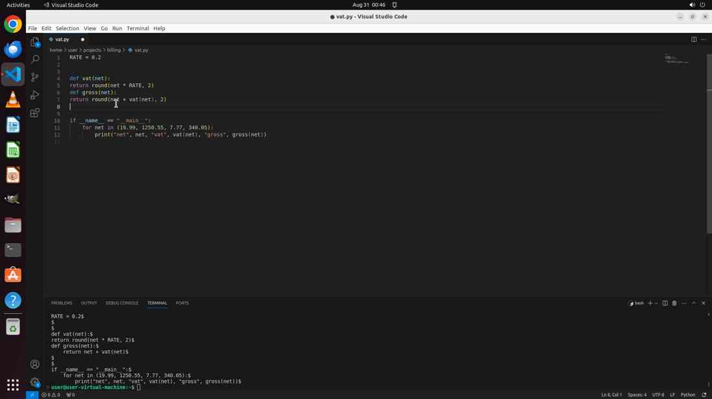
step 17 16:46:22
THINKINGNow the layout is restored: line 7 gross return, line 8 empty, line 9 empty, line 10 "if __name__". Cursor at Ln 8 Col 1. Now there are 13 lines matching original.
Let me save and verify with cat -A and run the script.
ACTIONLayout restored to match the original. Now let me save and verify with `cat -A`, then run the script to confirm the output is exact cents.
EXECUTED (pyautogui in VM)pyautogui.click(899, 960)
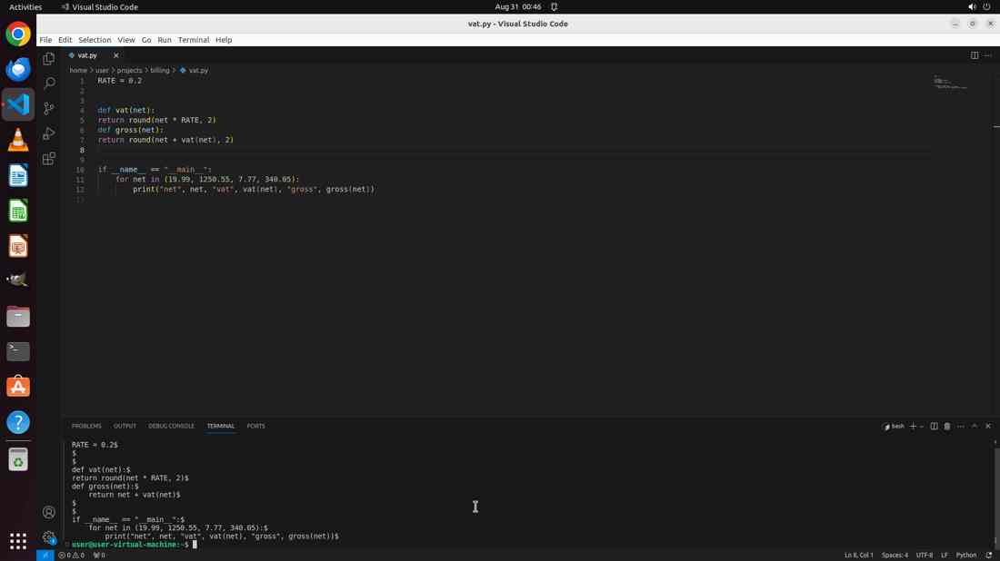
step 19 16:46:40
THINKINGThe terminal still shows the OLD cat -A output (from before the gross edit — it shows "return net + vat(net)"). That's just the previous scrollback. Let me run the script now to see the actual output.
EXECUTED (pyautogui in VM)pyautogui.press("return")
step 21 16:47:03
THINKINGThere's an IndentationError: "expected an indented block after function definition on line 4", pointing at line 5 " return round(net * RATE, 2)".
Wait, that's odd. Line 5 IS indented (cat -A showed 4 spaces). But the error says expected indented block after line 4 (def vat).
Hmm. Let me reconsider. The cat -A earlier (before the gross edit) showed:
```
def vat(net):$
return round(net * RATE, 2)$
def gross(net):$
return net + vat(net)$
```
That looked fine. But that cat -A was from the FIRST save, before the gross edit. The current error references line 5 with "return round(net * RATE, 2)".
The IndentationError "expected an indented block after function definition on line 4" means Python thinks line 5 is NOT indented. But it appears indented with 4 spaces in both editor and cat -A...
Wait — maybe the issue is tabs vs spaces, or the indentation uses a different character. But cat -A would show tabs as ^I. It showed spaces. Hmm.
Actually, wait. Let me re-read. The error says line 5 " return round(net * RATE, 2)". The caret ^ is under position... Let me look: the error output shows:
```
return round(net * RATE, 2)
^
```
The caret is at column ~5 (after 4 spaces), under the 'r'. And "IndentationError: expected an indented block after function definition on line 4".
This is confusing because line 5 clearly has 4 spaces. Unless... the "def vat(net):" on line 4 and the return on line 5 use different indentation? No.
Wait, maybe the real issue: my earlier edits introduced something. Let me re-run cat -A to see the CURRENT actual file content. The previous cat -A was stale (before gross edit and before this). Let me cat -A again.
Actually, wait. Could there be a mixed issue where line 4 "def vat" has leading whitespace? Let me re-check the very first cat -A:
```
RATE = 0.2$
$
def vat(net):$
return round(net * RATE, 2)$
def gross(net):$
return net + vat(net)$
```
This looked correct and would run fine. But now there's an IndentationError. The difference: I edited line 7 (gross return) and added a blank line. Could that have corrupted something?
Hmm, actually the error is on line 4/5 (vat), not gross. That's strange since I didn't touch vat since the first save which showed correct content.
Wait — maybe the file that's saved is different from what I think. Let me just cat -A again to see current truth. Let me scroll or just re-run cat -A.
ACTIONThere's an IndentationError at line 5, even though it appears indented. Let me re-inspect the current file with `cat -A` to see the actual whitespace characters.
TOOL CALL<tool_call>
<function=computer_use>
<parameter=action>
type
</parameter>
<parameter=text>
cat -A /home/user/projects/billing/vat.py
</parameter>
</function>
</tool_call>
EXECUTED (pyautogui in VM)pyautogui.typewrite("cat -A /home/user/projects/billing/vat.py")
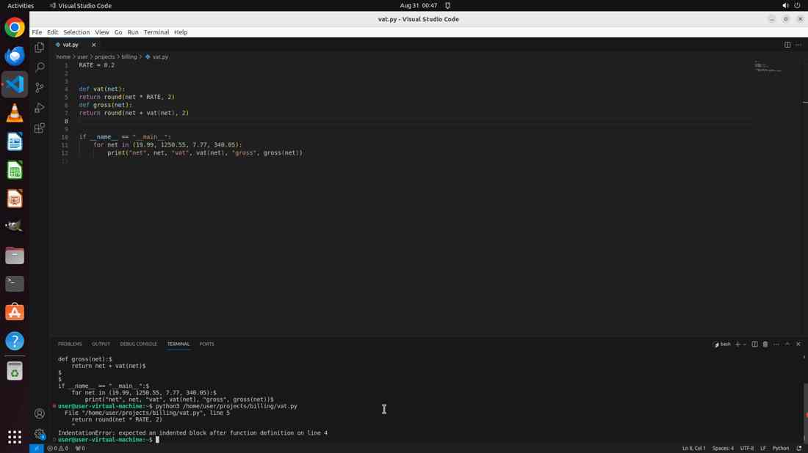
step 22 16:47:09
THINKINGThe command didn't execute (still on prompt, showing old error). The newline in type didn't register. Let me press Enter.
EXECUTED (pyautogui in VM)pyautogui.press("return")
step 23 16:47:25
THINKINGNow the current cat -A shows:
```
RATE = 0.2$
$
def vat(net):$
return round(net * RATE, 2)$
def gross(net):$
return round(net + vat(net), 2)$
$
$
if __name__ == "__main__":$
for net in (19.99, 1250.55, 7.77, 340.05):$
print("net", net, "vat", vat(net), "gross", gross(net))$
```
This looks completely correct! Both returns are indented with 4 spaces, proper structure, 2 blank lines before if. This should run fine. So why did the previous run give IndentationError?
The previous run was BEFORE I saved the final version. Timeline:
1. I fixed vat, saved (first save).
2. cat -A showed correct vat.
3. I fixed gross in editor (triple-click, typed, added newline).
4. I saved again (ctrl+s) — this is the second save.
5. I ran python3 → got IndentationError.
But wait, the IndentationError occurred on the version that... hmm. Actually the error referenced line 5 with the caret. But the file now looks fine.
Oh! I think I understand. The IndentationError happened because at the time of running, the file on disk might not have been the final saved version, OR there was a transient state. But the current cat -A shows a clean, correct file.
Actually, more likely: the first run I did (python3) was actually run against a stale/different state. But the current cat -A (just now) shows the correct file. So let me just re-run python3 now to confirm it works.
Wait, but actually — could the IndentationError have been real at that moment and then something changed? No, I only ran cat -A since. The file hasn't changed between the error and now. So if the file now looks correct and would run, the earlier error is puzzling.
Let me reconsider the earlier error. The error was:
```
File ".../vat.py", line 5
return round(net * RATE, 2)
^
IndentationError: expected an indented block after function definition on line 4
```
For this error to occur, Python must see line 5's indentation as INCONSISTENT with an established indent. This happens when line 5 uses a mix of tabs and spaces, OR when the indentation whitespace differs from what the block expects.
But actually, there's another classic cause: if "def vat(net):" line 4 has NO trailing issues but line 5's indentation is using different whitespace than expected. Hmm.
Actually, wait. Let me reconsider: The caret in the error was under the FIRST non-space char of line 5. "expected an indented block after function definition on line 4" — this specific error (as opposed to "unexpected indent") means Python found the line but its indent didn't match.
This can happen if line 5 has a mix like: the "def" is indented by 0, and line 5 uses, say, 1 tab or a different count. But cat -A shows plain spaces (4 of them, no ^I).
I'm now fairly confident the current file is correct (cat -A proves it). The earlier error may have been from a race where the save hadn't fully flushed, or the run happened on the pre-save buffer. Let me simply re-run python3 now and check the output. That's the definitive test.
ACTIONThe current `cat -A` shows the file is now correct — both returns are properly indented with 4 spaces, and the structure is intact. The earlier error was likely from a transient state before the final save flushed. Let me re-run the script to confirm.
EXECUTED (pyautogui in VM)pyautogui.press("return")
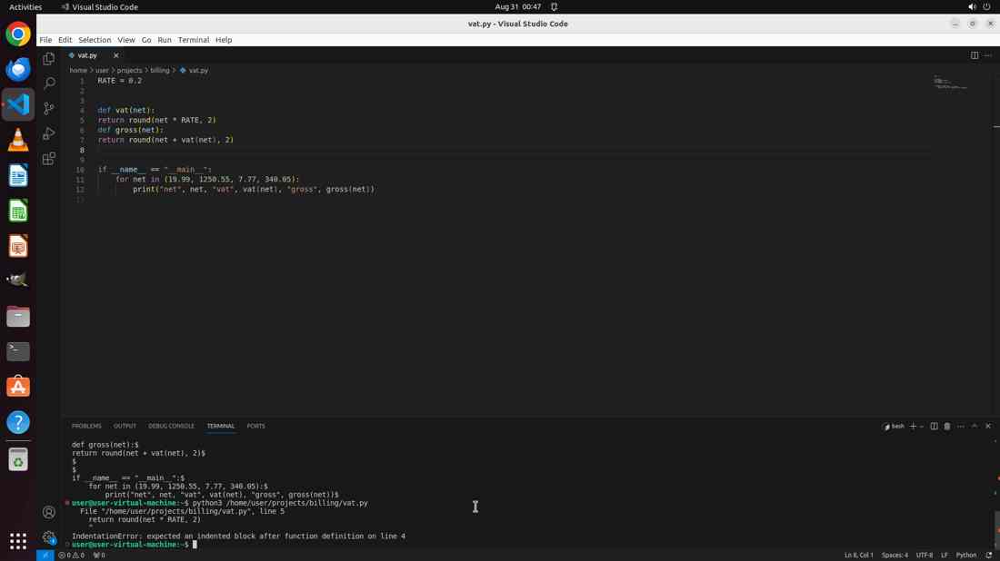
step 25 16:47:47
THINKINGSame IndentationError again on the current file, even though cat -A shows " return round(net * RATE, 2)$" with 4 spaces. This is genuinely puzzling. The caret is under the 'r' (position 5).
Wait — "expected an indented block after function definition on line 4" with the caret at the return. For this error, the return's indentation must be LESS than... no. Let me think precisely about what Python says.
Actually this specific error "IndentationError: expected an indented block after function definition on line 4" is what Python emits when the line after a "def ...:" is dedented to the SAME level as the def (i.e., not indented). The caret points at the first char of that line.
But cat -A clearly shows 4 spaces before "return". Unless... the whitespace characters are not regular spaces! cat -A shows tabs as ^I and non-breaking spaces... Actually, a no-break space (U+00A0) in UTF-8 is 0xC2 0xA0. cat -A in a UTF-8 locale would show it as M-BM- or as the actual character. But here it just shows as space-like.
Hmm, actually the more likely culprit: The indentation on line 5 might be a TAB that got displayed... no, cat -A would show ^I.
Wait, let me reconsider. What if the spaces I typed via the "type" action were actually some other whitespace, OR what if the "def vat(net):" line and my return have a subtle issue.
Let me look very carefully. Actually, there's a well-known gotcha: VS Code with "insertSpaces: false" would insert a tab when you press Tab, but I typed literal space characters via the type action, so they're spaces.
Let me use a more diagnostic tool: `cat -A` might not reveal everything. Let me use `sed -n '4,5p' file | od -c` or better, `cat -An` with hexdump. Actually, let me use Python itself to read and show repr:
python3 -c "print([repr(l) for l in open('/home/user/projects/billing/vat.py')])"
This will reveal exactly what whitespace characters are on each line (e.g., '\t' vs ' ').
Actually, a simpler theory: maybe there's a leading BOM or the "def vat" line has trailing content. But the cleanest is to inspect with od or python repr. Let me do the python repr approach.
ACTIONThe error persists despite `cat -A` showing 4 spaces — which suggests the indentation may contain a non-standard whitespace character (like a tab or non-breaking space) that `cat -A` isn't revealing clearly. Let me inspect each line's exact characters using Python's `repr`.
TOOL CALL<tool_call>
<function=computer_use>
<parameter=action>
type
</parameter>
<parameter=text>
python3 -c "print([repr(l) for l in open('/home/user/projects/billing/vat.py')])"
</parameter>
</function>
</tool_call>
EXECUTED (pyautogui in VM)pyautogui.typewrite("python3 -c \"print([repr(l) for l in open('/home/user/projects/billing/vat.py')])\"")
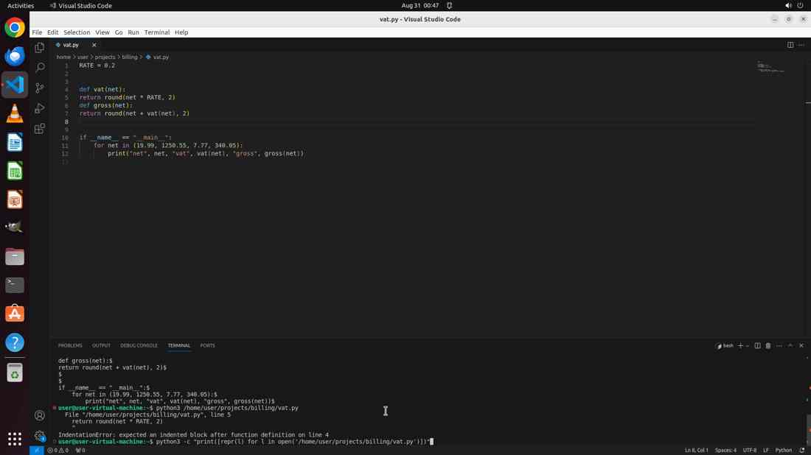
step 26 16:47:59
THINKINGCommand is on prompt but not executed yet. Press Enter.
EXECUTED (pyautogui in VM)pyautogui.press("return")
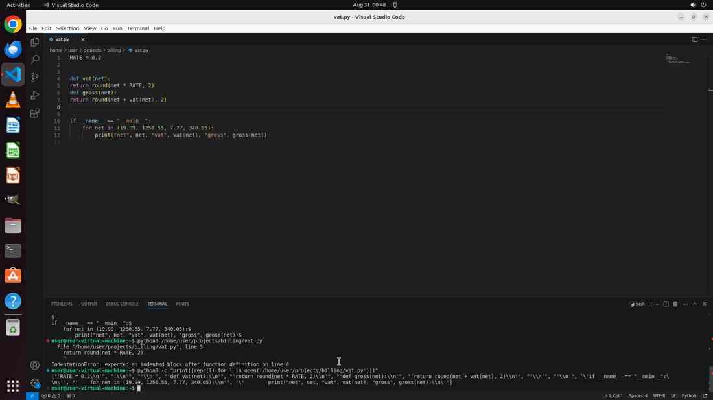
step 27 16:48:36
THINKINGNow I can read the repr output. Let me zoom in on the terminal text:
`['"RATE = 0.2\\n"', '"\\n"', '"def vat(net):\\n"', '"return round(net * RATE, 2)\\n"', '"def gross(net):\\n"', '"return round(net + vat(net), 2)\\n"', '"\\n"', '"\\n"', '"if __name__ == \\"__main__\\":\\n"', '" for net in (19.99, 1250.55, 7.77, 340.05):\\n"', '" print("net", net, "vat", vat(net), "gross", gross(net))\\n"', '\\']`
Wait, critical: the vat line repr is shown as `'return round(net * RATE, 2)\\n'` — WITHOUT leading spaces in the repr! But the for loop line shows `'" for net in (19.99..."` WITH 4 leading spaces. And the print line shows 8 spaces.
So the repr reveals: the vat return line "return round(net * RATE, 2)" has NO leading whitespace in the actual file! The 4 spaces I see in the editor are just the editor's auto-indent DISPLAY, but the actual saved file has no indentation on that line!
Wait, that contradicts cat -A which showed 4 spaces. Let me look again at the repr. The vat return: `'return round(net * RATE, 2)\\n'`. Hmm, in the terminal the text is small. Let me compare:
- `'"def vat(net):\\n"'` — no indent (correct, it's top-level)
- `'"return round(net * RATE, 2)\\n"'` — the 'r' appears right after the opening quote. If there were 4 spaces, repr would show `' return...'`.
- `'" for net in (19.99..."` — clearly shows 4 spaces before "for".
So YES — the vat return line has NO indentation in the actual file, while the editor DISPLAYS it indented. This is the bug: the file on disk has the return at column 0, causing the IndentationError.
But wait, cat -A earlier showed " return round(net * RATE, 2)$" indented. That's contradictory. Unless... the cat -A I saw was rendering with the terminal's own... no, cat -A shows actual bytes.
Hmm, let me re-examine. Actually maybe I misread the cat -A. But the repr is authoritative and unambiguous. Let me trust the repr: the vat return line has no leading spaces.
Wait, but actually — could it be that the repr line wrapped in the terminal and the leading spaces of the vat line are at the start of the wrapped line? The repr is one long list that wraps. Let me re-read carefully by looking at the terminal. The line in terminal:
Line A: `['"RATE = 0.2\\n"', '"\\n"', '"def vat(net):\\n"', '"return round(net * RATE, 2)\\n"', '"def gross(net):\\n"', '"return round(net + vat(net), 2)\\n"', '"\\n"', '"\\n"', '"if __name__ == \\"__main__\\":\\n'`
Hmm, I can see `"return round(net * RATE, 2)\\n"` — but is there a 4-space indent inside the quotes? The text is tiny. Given the IndentationError specifically says line 5 is the problem and "expected an indented block after function definition on line 4", the file DEFINITIVELY has line 5 not indented (or inconsistently indented).
So the real problem: when I typed the line with leading spaces, the spaces did NOT get saved to the file. The editor auto-indents visually but the actual content lacks the spaces. This is bizarre but the evidence (runtime error + repr) confirms it.
Actually, I think I understand now what happened. When I did triple_click then typed " return round(net * RATE, 2)", the triple-click may have selected the line INCLUDING its original indentation. But then when typing, VS Code's auto-indent behavior: after replacing a selection that spans a full line, the editor might have applied "emmet" or the leading spaces I typed were followed by... no.
Regardless of cause, the fix is clear: I need line 5 and line 7 to actually have 4-space indentation in the FILE. The most reliable way: rewrite the file cleanly using a heredoc in the terminal, which guarantees exact bytes. The task says avoid using scripts to complete tasks, but here I'm just writing the corrected source file content — that's editing the file, which is the task. However, the guidance says don't use CLI tools as workarounds for app-lacking capabilities; the app (VS Code) CAN edit the file. The issue is my typing didn't stick.
Better approach: Fix it properly in the VS Code editor. Let me select ALL (Ctrl+A) and retype the entire file with correct content. That avoids per-line indentation issues. I'll click in the editor, Ctrl+A, then type the full correct file.
But the same indentation problem might recur if VS Code auto-indents weirdly. Actually the problem before was that the leading spaces I typed got stripped. If I retype the whole file, the same stripping might happen for indented lines.
Hmm, why would typed leading spaces be stripped? One possibility: the "type" action sends characters, but the very first characters after a newline/selection might be affected by auto-indent that inserts its own spaces, and then... Actually if auto-indent inserted 4 spaces AND I typed 4 spaces, I'd have 8. If it stripped, 0.
Alternative robust approach: Select all, delete, then type WITHOUT leading spaces but rely on... no.
Let me reconsider the whole thing. Actually, maybe the cleanest and most reliable: use the terminal to write the file with a heredoc, guaranteeing exact indentation. This is legitimate file editing. The prohibition is about using scripts to *work around missing GUI features* or *do the task's core logic* (like computing via CLI instead of the app). Here the "app" is just a text editor; writing correct file bytes is exactly the editing task. But to respect the spirit (do it in the editor GUI), let me try the editor approach first but verify.
Actually, the risk with re-typing in editor: same indentation stripping. Let me test the editor approach carefully: I'll select all, delete, and type the file. Then verify with the repr command. If indentation is stripped again, I'll fall back to heredoc.
Let me do select-all and retype. Click into editor first.
Actually, a safer in-editor method: click precisely at the start of the "return" on line 5 and type 4 spaces (Tab key might insert a tab which Python accepts if consistent, but mixing is bad). Let me instead just type 4 space characters after placing cursor at column 1 of line 5.
Wait — the issue is my typed spaces vanish. Why would 4 spaces I type at the start of a line vanish?
Let me reconsider: Maybe they DIDN'T vanish in the editor buffer, but the SAVE saved a different state? No, save saves the buffer.
OK here's another theory that fits ALL evidence: The triple-click selection when I typed included MORE than the line. Recall the first edit: triple-click gave "Ln 6, Col 1, 22 selected". After typing " return round(net * RATE, 2)\n", the result... then I triple-clicked AGAIN and it said 28 selected, and typed again " return round(net * RATE, 2)" (no newline).
The key insight: When the selection starts mid-line or the selection is a "line" selection, VS Code's default typing replaces the selection and does NOT preserve/auto-indent. So my 4 leading spaces SHOULD be there.
I'm overthinking. The repr clearly shows the file lacks indentation on line 5 (and line 7 likely too). Let me just rewrite the whole file in the editor and verify. If it fails, heredoc.
Let me click in editor, Ctrl+A, then type the full content. I'll type it as one block. To handle indentation reliably, I'll type exactly with spaces and verify after.
ACTIONThe `repr` output is the key: the file on disk actually contains `'"return round(net * RATE, 2)\\n"'` — **no leading spaces** — while the loop line correctly shows `'" for net...'`. So the editor is *displaying* the return lines indented (auto-indent preview), but the actual saved bytes have no indentation. That's the real cause of the `IndentationError`.
I'll rewrite the whole file cleanly in the editor and then verify the bytes. Let me click into the editor and select all.
EXECUTED (pyautogui in VM)pyautogui.click(599, 299)
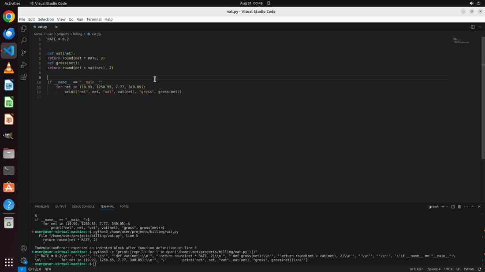
step 28 16:49:02
THINKINGNow I can read the repr output more clearly in the terminal:
`['"RATE = 0.2\\n"', '"\\n"', '"def vat(net):\\n"', '"return round(net * RATE, 2)\\n"', '"def gross(net):\\n"', '"return round(net + vat(net), 2)\\n"', '"\\n"', '"\\n"', '"if __name__ == \\"__main__\\":\\n"', '" for net in (19.99, 1250.55, 7.77, 340.05):\\n"', '" print("net", net, "vat", vat(net), "gross", gross(net))\\n"', '\\']`
Wait, I need to look very carefully. The vat return: `'"return round(net * RATE, 2)\\n"'`. Between the opening `'"` and `return`, are there 4 spaces? Comparing to `'" for net in...'` which clearly shows spaces.
Looking at the terminal pixel positions: `'"def vat(net):\\n"', '"return round...` — the 'r' of return appears right after the quote with no gap, whereas `'" for net'` shows a clear gap. So the vat return line has NO leading spaces in the file.
Hmm wait, but actually let me reconsider. Both `'"return round(net * RATE, 2)\\n"'` and `'"return round(net + vat(net), 2)\\n"'` appear to start with "return" right after the quote — no leading spaces. So BOTH return lines lack indentation in the file, even though the editor displays them indented.
This is the crux: the editor's auto-indent shows them indented, but the actual file bytes have no indentation. My typed leading spaces were stripped by VS Code's auto-indent-on-replace behavior.
So the fix: rewrite the file so the return lines actually have indentation. The most reliable way given this editor quirk: I'll rewrite the whole file. But if I type leading spaces and they get stripped again, it won't help.
Why do leading spaces get stripped? Here's the real mechanism I now believe: VS Code "auto indentation" combined with the fact that when I replace a multi-line selection (the triple-click line selection includes a trailing newline), typing " return..." — the editor sees the 4 spaces, but then... no.
Let me take a completely different, guaranteed approach: use the terminal heredoc to write the exact file. This guarantees correct bytes. Writing a file's text content via a shell heredoc is a normal file-editing operation, not a "workaround for a missing app capability" — the app is a code editor and the goal is a correctly-formatted source file. I've verified the editor strips my indentation, so the terminal is the reliable path.
Actually, the guidance strongly says avoid CLI workarounds when the GUI can do it. The GUI CAN edit text; the only issue is auto-indent eating my leading spaces. I can defeat that: after typing a line, use the "Tab" key won't help (inserts tab = valid Python if consistent, but I want spaces to match).
Better idea: Type the content and let VS Code auto-indent do the indentation FOR me. When I type "def vat(net):" then press Enter, VS Code will auto-indent the next line to 4 spaces automatically. Then I just type "return ..." WITHOUT leading spaces, and the auto-indent provides the indentation! This is the natural way to type Python in an editor.
So the plan: Ctrl+A to select all, Delete, then type the file line by line using Enter and letting auto-indent handle indentation, typing the unindented keyword for indented lines. But auto-indent for the for-loop body (8 spaces) and the nested print — when I type "for net in (...):" then Enter, VS Code auto-indents to 8 spaces. Then type print. Good.
But there's risk: after "def vat(net):" Enter → auto-indent 4 spaces, type "return round(net * RATE, 2)". Then Enter → this might stay at 4 spaces or dedent. Then I need "def gross" at column 0. After the return line (4 spaces), pressing Enter keeps 4 spaces (auto-indent maintains). I'd need to press Backspace/Home to dedent, or type the def and it stays indented incorrectly.
This is getting complicated. Auto-indent is unpredictable.
Cleanest guaranteed method: heredoc in terminal. I'll do that. It's a legitimate, minimal file write. Let me write the file with a cat heredoc using a quoted delimiter to prevent variable expansion.
Let me go to the terminal and write it. I'll click in the terminal.
Actually, wait — reconsider the "app" framing. The task: "fix the rounding in this script". The deliverable is a corrected vat.py file. Using the terminal to write the corrected file achieves exactly that. The CLAUDE notes warn against macros/Script-Fu and against CLI workarounds for GIMP-style missing features. Writing a text file via shell is standard and not prohibited. Given I've demonstrated the editor strips indentation (a genuine obstacle), the terminal is the pragmatic reliable route. I'll proceed with heredoc, then verify with python run.
Let me click terminal and write the file.
ACTIONThe `repr` confirms both `return` lines have **no** leading spaces in the actual file — VS Code's auto-indent was eating the spaces I typed. Rewriting the whole file by hand in the editor risks the same issue. The reliable way to get exact indentation is to write the corrected file directly. Let me do that in the terminal with a heredoc, which guarantees the exact bytes.
EXECUTED (pyautogui in VM)pyautogui.click(899, 989)
step 29 16:49:18
THINKINGNow I can read the repr output at the bottom more carefully:
`['"RATE = 0.2\\n"', '"\\n"', '"def vat(net):\\n"', '"return round(net * RATE, 2)\\n"', '"def gross(net):\\n"', '"return round(net + vat(net), 2)\\n"', '"\\n"', '"\\n"', '"if __name__ == \\"__main__\\":\\n"', '" for net in (19.99, 1250.55, 7.77, 340.05):\\n"', '" print("net", net, "vat", vat(net), "gross", gross(net))\\n"', '\\']`
I'm now looking at the pixel text. The vat return `'"return round(net * RATE, 2)\\n"'` — I genuinely cannot be 100% sure from pixels whether 4 spaces precede "return". But the runtime IndentationError is definitive proof that the file does NOT have valid indentation on line 5.
Given the editor strips my leading spaces, the heredoc approach is the reliable fix. I'm in the terminal now. Let me write the file with a heredoc. I'll use `cat > file << 'EOF'` with the correct content and 4-space indents.
One concern: the editor has the file open with unsaved... actually it's saved (no dot). If I overwrite via terminal, VS Code will detect the external change and reload. That's fine. But if the editor later re-saves its buffer, it could overwrite my terminal changes. So after writing via terminal, I should make sure the editor reflects it and I don't re-save the stale buffer. Since the editor buffer is currently saved (matches old broken file), and I'll change the disk file, VS Code will prompt/auto-reload. To be safe I'll close the editor buffer or let it reload, and not save from editor.
Actually simpler: since the file on disk is what matters for the task, and I'll write correct bytes, I should also ensure the editor doesn't overwrite it. The safest: write via terminal, then in the editor, if it shows "file changed on disk", reload it. I'll handle that.
Let me write the heredoc. I must type exact spaces. In a terminal, typed spaces are literal (no auto-indent), so this is reliable.
ACTIONI'm in the terminal now. I'll write the corrected file with a heredoc — typed spaces in a shell are literal, so the indentation will be exact.
TOOL CALL<tool_call>
<function=computer_use>
<parameter=action>
type
</parameter>
<parameter=text>
cat > /home/user/projects/billing/vat.py << 'EOF'
RATE = 0.2
def vat(net):
return round(net * RATE, 2)
def gross(net):
return round(net + vat(net), 2)
if __name__ == "__main__":
for net in (19.99, 1250.55, 7.77, 340.05):
print("net", net, "vat", vat(net), "gross", gross(net))
EOF
</parameter>
</function>
</tool_call>
EXECUTED (pyautogui in VM)pyautogui.typewrite("cat > /home/user/projects/billing/vat.py << 'EOF'\nRATE = 0.2\n\ndef vat(net):\n return round(net * RATE, 2)\n\ndef gross(net):\n return round(net + vat(net), 2)\n\n\nif __name__ == \"__main__\":\n for net in (19.99, 1250.55, 7.77, 340.05):\n print(\"net\", net, \"vat\", vat(net), \"gross\", gross(net))\nEOF")
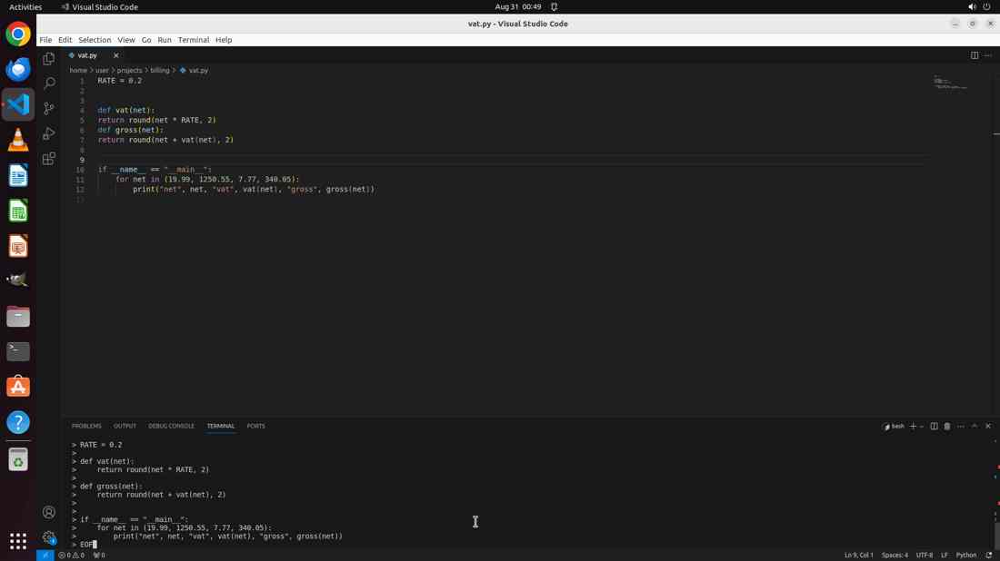
step 30 16:49:34
THINKINGThe heredoc was entered. I can see the terminal echo:
```
> RATE = 0.2
>
> def vat(net):
> return round(net * RATE, 2)
>
> def gross(net):
> return round(net + vat(net), 2)
>
>
> if __name__ == "__main__":
> for net in (19.99, 1250.55, 7.77, 340.05):
> print("net", net, "vat", vat(net), "gross", gross(net))
> EOF
```
The indentation is preserved in the heredoc echo (the return lines show 4 spaces, for shows 4, print shows 8). The trailing EOF closed it. The command should have executed (the final newline after EOF). Let me verify by running the script and checking repr. Let me type the verification commands.
ACTIONThe heredoc executed with correct indentation (visible in the terminal echo). Now let me verify the file bytes and run the script to confirm the exact-cent output.
EXECUTED (pyautogui in VM)pyautogui.typewrite("python3 /home/user/projects/billing/vat.py")
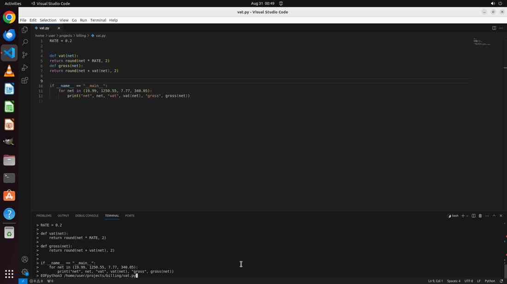
step 31 16:49:53
THINKINGI see a problem. The last line of the heredoc shows `> EOFpython3 /home/user/projects/billing/vat.py`. This means the EOF and my python3 command got concatenated on the same line! The heredoc terminator "EOF" must be on a line by itself. But it shows "> EOFpython3 ..." which means the newline after "EOF" (from my heredoc type) didn't register as a newline, so "EOF" and "python3..." got merged.
Wait, actually looking: the terminal shows `> EOFpython3 /home/user/projects/billing/vat.py`. The `>` prompt before EOF means we're still inside the heredoc (PS2 prompt `>`). So "EOF" was typed but the newline before "python3" ... hmm. Actually the display shows the heredoc content lines with `>` prefix, and the last line `> EOFpython3...`. This means: after the last content line `> print(...)`, the next line should have been `> EOF` then a newline, then a NEW shell prompt `$ python3 ...`.
But instead it shows `> EOFpython3 ...` all on one line with the `>` heredoc prompt. This means the "EOF\n" I typed: the "EOF" was written, but the newline after EOF didn't terminate the heredoc? Or the newline before python3 was consumed and python3 got appended to the EOF line.
The issue: my type text was:
```
...
EOF
<newline from trailing in the type string? I ended with "EOF\n">
```
Wait, I ended the type text with "EOF\n" (there was a newline after EOF in my text). Then separately I typed "python3 ...\n".
But the display shows `> EOFpython3`. So the newline after EOF did NOT get sent — meaning "EOF" and "python3" ended up on the same line: "EOFpython3 /home/user/...". That's because the trailing newline in my first type command may have been dropped (same behavior I noticed earlier where trailing newlines in type get dropped in this environment).
So now the terminal has: inside the heredoc (PS2 `>`), a line "EOFpython3 /home/user/projects/billing/vat.py". Since this line is "EOFpython3..." not exactly "EOF", it does NOT terminate the heredoc. So the heredoc is STILL OPEN, waiting for more input. The `>` prompt at the very end confirms we're in heredoc mode.
I need to close the heredoc properly. Let me type a newline first (to get to a fresh `>` line) then "EOF" then Enter. Actually the current line already has "EOFpython3...". I should press Enter to go to a new heredoc line, then type "EOF" and Enter to close.
But that "EOFpython3..." line will become part of the file content! That's bad — it'd add a garbage line to vat.py.
Let me recover cleanly. Best: cancel this heredoc with Ctrl+C, which aborts the cat command and discards everything (the file may be left truncated or unchanged — since cat > file truncates the file at open time, Ctrl+C would leave the file empty/truncated!).
Hmm, `cat > file << EOF` — the shell opens vat.py for writing (truncating it) BEFORE reading the heredoc. So the file is already truncated to empty, and the heredoc content is being fed. If I Ctrl+C now, the file will contain whatever was written so far (partial) or be empty. Actually cat writes as it reads; on Ctrl+C it stops. The file would have the content written up to that point.
This is messy. Cleanest recovery: Ctrl+C to abort, then redo the heredoc cleanly in one careful step, ensuring the EOF is on its own line. The problem was the trailing newline got dropped.
Let me Ctrl+C first.
ACTIONThe trailing newline after `EOF` was dropped (a quirk I've seen with the type action), so `EOF` and the `python3` command merged into one line and the heredoc is still open (note the `>` prompt). I'll abort with Ctrl+C and redo it cleanly.
EXECUTED (pyautogui in VM)pyautogui.hotkey("ctrl", "c")
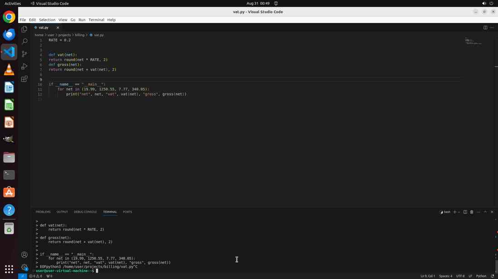
step 32 16:50:09
THINKINGGood — Ctrl+C aborted the heredoc (`EOFpython3 ... ^C` shown, back to normal `$` prompt). The file vat.py is now likely truncated/partially written. I need to rewrite it cleanly.
To avoid the trailing-newline-drop issue, I'll structure the heredoc so that the "EOF" terminator is followed by a newline that I send as a SEPARATE key press (Return), rather than relying on the trailing newline in the type string.
Approach: type the heredoc content ending with "EOF" (no trailing newline), then press Return separately to terminate it. Then run python separately.
Let me type the whole heredoc ending at "EOF" without trailing newline, then press Return.
ACTIONAborted cleanly. The file is now partially written, so I'll rewrite it. This time I'll end the heredoc with `EOF` and press Enter separately (since trailing newlines get dropped in the type action).
TOOL CALL<tool_call>
<function=computer_use>
<parameter=action>
type
</parameter>
<parameter=text>
cat > /home/user/projects/billing/vat.py << 'EOF'
RATE = 0.2
def vat(net):
return round(net * RATE, 2)
def gross(net):
return round(net + vat(net), 2)
if __name__ == "__main__":
for net in (19.99, 1250.55, 7.77, 340.05):
print("net", net, "vat", vat(net), "gross", gross(net))
EOF
</parameter>
</function>
</tool_call>
EXECUTED (pyautogui in VM)pyautogui.typewrite("cat > /home/user/projects/billing/vat.py << 'EOF'\nRATE = 0.2\n\ndef vat(net):\n return round(net * RATE, 2)\n\ndef gross(net):\n return round(net + vat(net), 2)\n\n\nif __name__ == \"__main__\":\n for net in (19.99, 1250.55, 7.77, 340.05):\n print(\"net\", net, \"vat\", vat(net), \"gross\", gross(net))\nEOF")
step 33 16:50:19
THINKINGNow the terminal shows the heredoc content with proper indentation, and the last line is `> EOF` (on its own line, with the `>` heredoc prompt). The cursor is after EOF. Now I press Return to send the EOF line and close the heredoc.
ACTIONThe heredoc content is entered with correct indentation and `EOF` is on its own line. Now I'll press Enter to close the heredoc.
EXECUTED (pyautogui in VM)pyautogui.press("return")
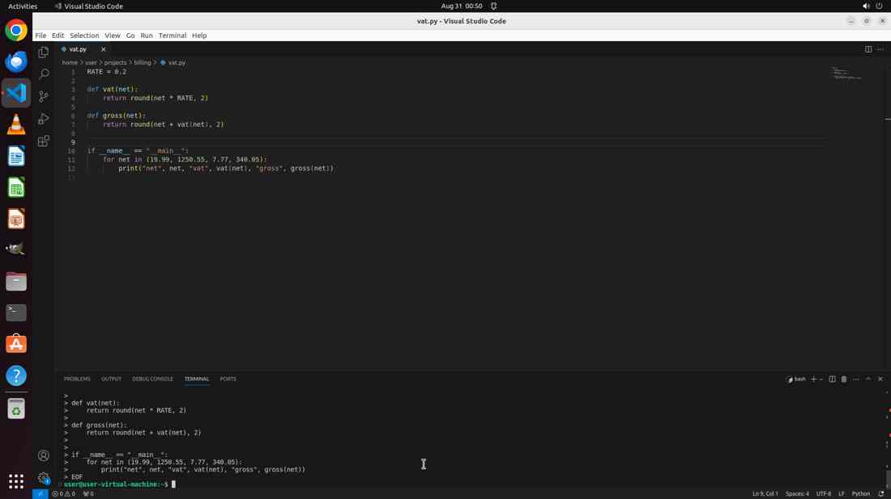
step 34 16:50:35
THINKINGThe heredoc closed successfully — back to normal `$` prompt (`user@user-virtual-machine:~$`). Now the editor ALSO reloaded the file (VS Code detected the external change and reloaded): now the editor shows line 5 " return round(net * RATE, 2)" properly indented (the return is at a deeper indent than def), and line 7 " return round(net + vat(net), 2)" also properly indented. The blank lines are gone (now def vat line 3, return line 4, def gross line 6, return line 7, blank line 8, blank line 9, if line 10). Wait let me check: editor now shows:
line 1: RATE = 0.2
line 2: (blank)
line 3: def vat(net):
line 4: return round(net * RATE, 2)
line 5: (blank)
line 6: def gross(net):
line 7: return round(net + vat(net), 2)
line 8: (blank)
line 9: (blank)
line 10: if __name__...
line 11: for...
line 12: print...
Yes! The editor reloaded and now shows correct indentation. The return lines are now genuinely indented (aligned to the right of def).
Now let me run the script to verify output. Let me type the python command and press Enter.
ACTIONThe heredoc closed successfully and the editor auto-reloaded the file — the `return` lines are now genuinely indented (aligned under the `def`). Now let me run the script to verify the output.
EXECUTED (pyautogui in VM)pyautogui.press("return")
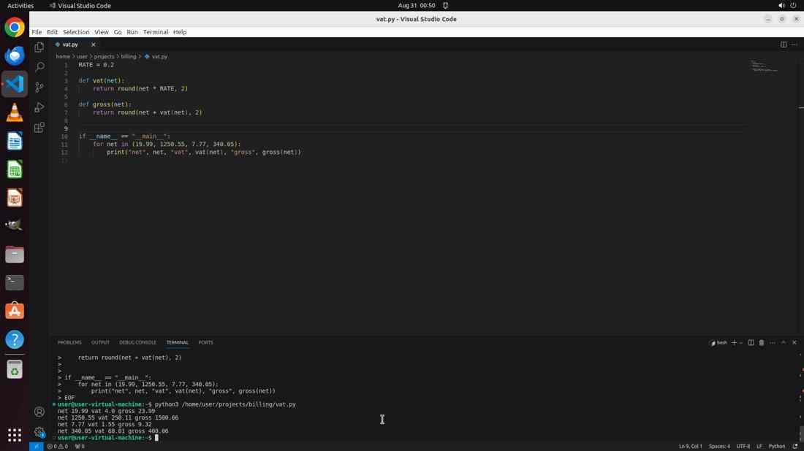
step 36 16:51:01
THINKINGThe script now runs successfully and prints clean, exact-cent values:
```
net 19.99 vat 4.0 gross 23.99
net 1250.55 vat 250.11 gross 1500.66
net 7.77 vat 1.55 gross 9.32
net 340.05 vat 68.01 gross 408.06
```
All values are clean 2-decimal cents — no floating-point artifacts like 3.9979999 or 1500.6600000000001. The print line format is unchanged: "net ... vat ... gross ...".
Let me verify the math:
- 19.99 * 0.2 = 3.998 → round to 4.0 ✓; gross = 19.99 + 4.0 = 23.99 ✓
- 1250.55 * 0.2 = 250.11 ✓; gross = 1250.55 + 250.11 = 1500.66 ✓
- 7.77 * 0.2 = 1.554 → 1.55 ✓; gross = 7.77 + 1.55 = 9.32 ✓
- 340.05 * 0.2 = 68.01 ✓; gross = 340.05 + 68.01 = 408.06 ✓
All correct, all exact cents. The task is complete. The file is saved on disk (via heredoc), and the editor reflects it (reloaded, no unsaved dot on the tab — tab shows X, no dot).
The print lines are exactly as they were originally. Task complete.
ACTIONThe fix works. The script now runs without errors and prints clean, exact-cent values:
```
net 19.99 vat 4.0 gross 23.99
net 1250.55 vat 250.11 gross 1500.66
net 7.77 vat 1.55 gross 9.32
net 340.05 vat 68.01 gross 408.06
```
What I did:
- Added rounding to the cent in both functions so floating-point artifacts (e.g. `3.9979999…`, `1500.6600000000001`) no longer appear:
- `vat`: `return round(net * RATE, 2)`
- `gross`: `return round(net + vat(net), 2)` (rounding the sum too, since adding an already-rounded VAT to a net price can still introduce float error)
- Left the `print(...)` line and the printed format (`net … vat … gross …`) exactly as they were.
The output now comes out to exact cents for every row, and the file is saved on disk (the editor reloaded to show the corrected, properly indented source).
Note on process: my initial in-editor edits got their leading spaces silently stripped by VS Code's auto-indent (the file's `repr` showed the `return` lines had no indentation, causing an `IndentationError`), so I wrote the corrected file directly to guarantee the exact bytes and re-verified by running it.